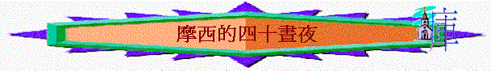
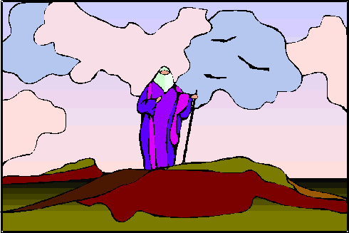
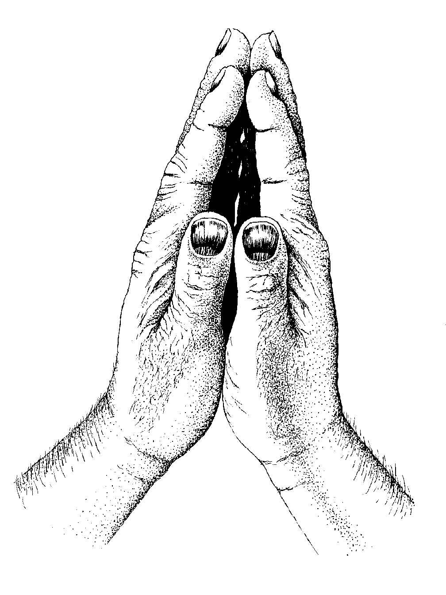

引言
當 神拯救以色列民離開埃及後，摩西面前的主要工作是要建立選民成為聖潔的群體，並且建立神聖的會幕，但在未開始建立之先，摩西的人生經歷了二次非常特別的【四十晝夜】，若我們仔細留意，會發現很多寶貴的真理，是我們今日一班信徒，在未開始正式建立 神的家，未開始事奉之榜樣，究竟摩西在四十日有什麼值得我們效法？主要有三方面的事情。
一）四十晝夜上山親近 神
『耶和華對摩西說，你和亞倫、拿答、亞比戶，並以色列長老中的七十人，都要上到我這�堥荂A遠遠的下拜，惟獨你可以親近耶和華．．．．』出２４：１－２）

不是他們不知道「離了主，便不能作什麼」之真理，也不是不知道「親近 神與我有益」之經文，他們知道。但在現實生活，實在太忙，有很多工作要面對，很難捨得完全放低，但摩西卻願意，其實在他的時代中，他每日都要面對很多爭訟的事件，面對百多萬選民的事務，他也有他的家庭、兒子要照顧，但他卻完全放低，照 神的吩咐上山，而且不是短時間的上山，聖經說是用「四十晝夜」，不是用一兩小時，是用四十日，完全放低時間，放低所愛的人，放低工作，為要見一見 神，難怪 神將心意向他顯明，難怪 神大大的使用他。
我們又如何呢？我們願不願意用時間去親近主呢？若果一個事奉人用了很多心機、精神，忙碌在事工上，但他的靈修生活很差，很少捨得每日用時間親近主，覺得用十五分鍾己經算理想，他的事奉仍未最美，因為「親近 神」才是最基本，最合 神心意的事奉之一，連此項甘甜之工作也不能作好，更談不上日後 神所交托之偉大工程。
二）四十晝夜等候 神的話
『我上了山，要領受兩塊石版，就是耶和華與你們立約的版，那時我在山上住了四十晝夜，沒有吃飯，也沒有喝水。』 （申９：９）
 摩西除了親近 神外，他最主要的目的，是要領受 神的話語，因為 神的心意不是要摩西靠自己的方法，自己的計劃，自己的智慧去建立會幕，完全不是！乃是要照 神在山上的吩咐，山上的話語而建。
摩西除了親近 神外，他最主要的目的，是要領受 神的話語，因為 神的心意不是要摩西靠自己的方法，自己的計劃，自己的智慧去建立會幕，完全不是！乃是要照 神在山上的吩咐，山上的話語而建。
事奉也是一樣，可能我們在下年度都有不同的事奉崗位，各人滿腦袋都有不同的「全年大計」「部門工作」但最重要的是我們心�埵釣S有「領受 神的話語」，清不清楚 神在我�堶悸漲垠t與領受，摩西清楚了，所以他可以放膽，只管依著 神的吩咐去做，而我們究竟清楚了沒有？
我多年前在一個令會中，聽一位事奉 神的僕人之分享，到現在仍然深刻，原來他每日未開始一日事奉之先，他必會做一件事情，就是來到神面前屈膝，如一張白紙，求問 神：「 神啊，今日你在我身上有什麼旨意、工作？」他每日都會這樣求問。美好的事奉就是這樣，不是靠自己意思，每一次認真地，凡事求問 神，不用心急，未必一兩日可以清楚，摩西也用了四十晝夜時間，只管專心等候 神的意思，時候一到，祂會將祂的心意向那些專心尋求 神的人顯明。
三）四十晝夜為百姓代求
『我因耶和華說要滅絕你們，就在耶和華面前照舊俯伏四十晝夜。』（申９：２５）

他所能作的只有這樣，亦只有這才是最有效的方法。結果 神真是應允了他。在建立 神的家之先，可能我們在團契�堙A在教會中，看到很多危機，很多問題，有時很想用許多方法即時去解決。但記著最好的方法就像摩西一樣「為他們代求，」要相信禱告！有時一個代求勝過靠自己埋頭苦幹做十件工作。
記得有一次，我在辦公室思索「怎樣去帶領團契」自己深察到在團契�埵�乎做不到很多事情，沒什麼用途，有很多理想仍沒做到，心�媔}始有點灰心及焦急，這個時候，心�埵雪P動對自己說：「你可以做就是祈禱，為他們代求，原來自己忽略了代求的重要，於是就立刻為約六位不穩定參與團契肢體代禱，很奇怪，當晚團契的聚會中，他們（約六位）竟然完全有出席， 神真是用自己微小的代禱，代禱真是有果效的。」
所以我們也不可以輕看禱告的重要，即使全年似乎在團契沒有什麼實質的工作可以做到，但最重要的還是問自己，我有沒有花時間為團友，為教會祈禱呢？摩西很捨得用四十晝夜為百姓代求，我們又如何呢？願不願意每日用小小時間為兩三位肢體祈禱，願不願意每個星期只抽一兩小時來到教會祈禱會為肢體代禱。
作為一個事奉者，君尊的祭司，未談什麼宏偉的工程之先，我們必須好像摩西一樣，先看重親近 神，等候 神的話，為人代求，這樣我們的事奉才有能力，才蒙 神悅納。